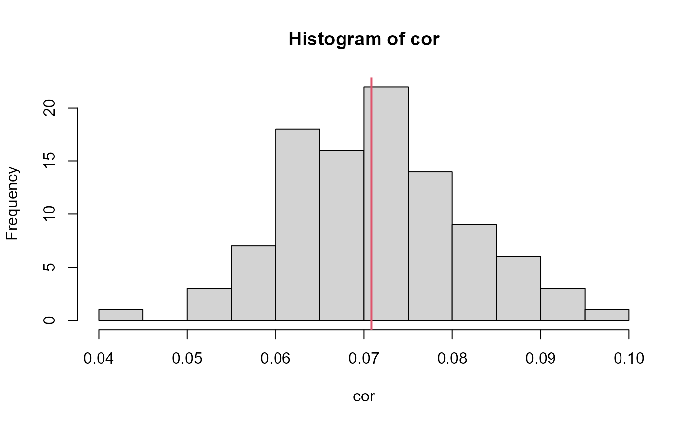

Implements a monthly bootstrap
bootstrap_month.RdMonths in which at least one variable exceeds the user-specified minimum proportion of non-missing values are sampled with replacement. February of leap years are treated as a 13th month.
Value
Dataframe containing a bootstrap undertaken with replacement that accounts for monthly-scale seasonality.
Examples
#Let's assess the sampling variability in kendall's tau
#correlation coefficient between rainfall and OsWL at S-22.
#Data starts on first day of 1948
head(S22.Detrend.Declustered.df)
#> Date Rainfall OsWL Groundwater
#> 1 1948-01-01 0.00 NA NA
#> 2 1948-01-02 0.14 NA NA
#> 3 1948-01-03 0.00 NA NA
#> 4 1948-01-04 0.00 NA NA
#> 5 1948-01-05 0.00 NA NA
#> 6 1948-01-06 0.00 NA NA
#Dataframe ends on 1948-02-03
tail(S22.Detrend.Declustered.df)
#> Date Rainfall OsWL Groundwater
#> 25962 2019-01-29 NA NA 2.69
#> 25963 2019-01-30 NA NA 2.68
#> 25964 2019-01-31 NA NA 2.65
#> 25965 2019-02-01 NA NA 2.64
#> 25966 2019-02-02 NA NA 2.62
#> 25967 2019-02-03 NA NA 2.60
#Adding dates to complete final month of combined records
final.month = data.frame(seq(as.Date("2019-02-04"),as.Date("2019-02-28"),by="day"),NA,NA,NA)
colnames(final.month) = c("Date","Rainfall","OsWL","Groundwater")
S22.Detrend.Declustered.df = rbind(S22.Detrend.Declustered.df,final.month)
#Generate 100 monthly bootstrap samples of rainfall and OsWL
cor = rep(NA,100)
for(i in 1:100){
boot_df = bootstrap_month(S22.Detrend.df[,c(1:3)], boot_prop=0.8)
boot_df = na.omit(boot_df)
cor[i] = cor(boot_df$Rainfall, boot_df$OsWL, method="kendall")
}
#Compare means of bootstrap samples with the mean of the observed data
hist(cor)
df = na.omit(S22.Detrend.df[,1:3])
abline(v=cor(df$Rainfall,df$OsWL, method="kendall"),col=2,lwd=2)
